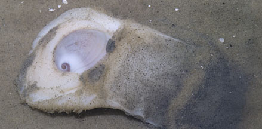
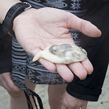
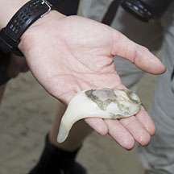
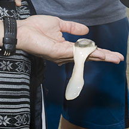
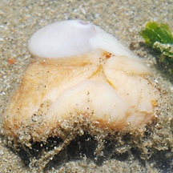
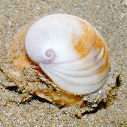

|
|
| shelled snails text index | photo index |
| Phylum Mollusca > Class Gastropoda > Family Naticidae |
| Naked
moon snail Sinum sp. Family Naticidae updated Aug 2020 Where seen? Resembling a large stiff white slug, this snail is sometimes seen in our seagrass meadows and sandy shores at night. When the shell is seen, it looks like a moon snail that refuses to withdraw into its shell. It is also called the Ear moon snail or Baby ear moon snail because of the shape of its delicate shell. Features: The animal can be 10cm long. Shell small (about 2cm) thin, white and flat with a wide shell opening and is usually completely covered by the living animal. Body leathery and white, huge and unable to retract completely into the shell. The animal can produce a large amount of slime. |
|
 Chek Jawa, Apr 05 |
 |
|
|
 Chek Jawa, Mar 12 |
 |
 |
Chek Jawa, Dec 19 |
| Naked moon snails on Singapore shores |
On wildsingapore
flickr
|
| Other sightings on Singapore shores |
|  Changi, May 11  Photo shared by Loh Kok Sheng on his blog. |
|
References
|